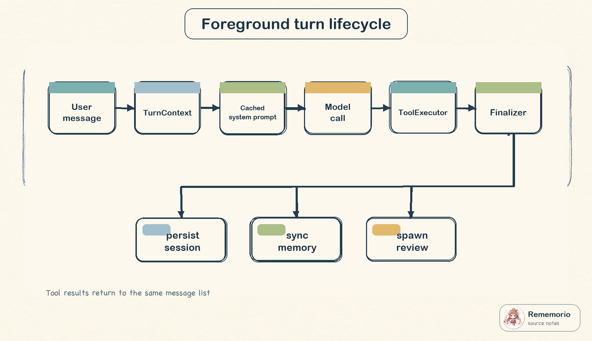
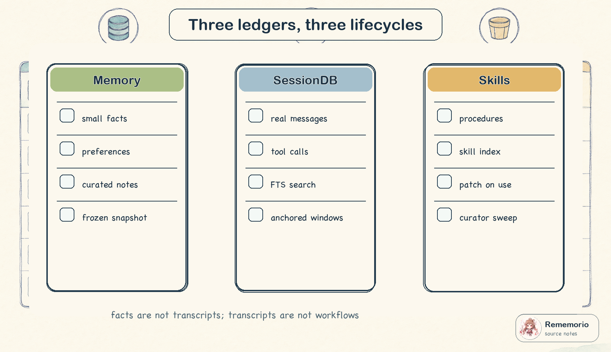
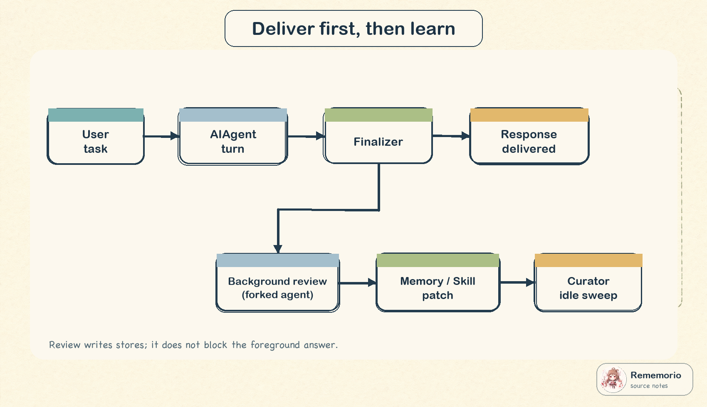
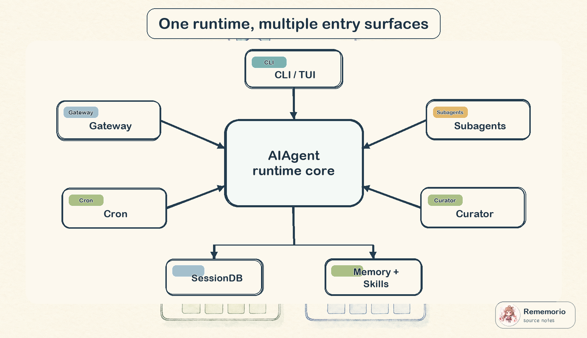
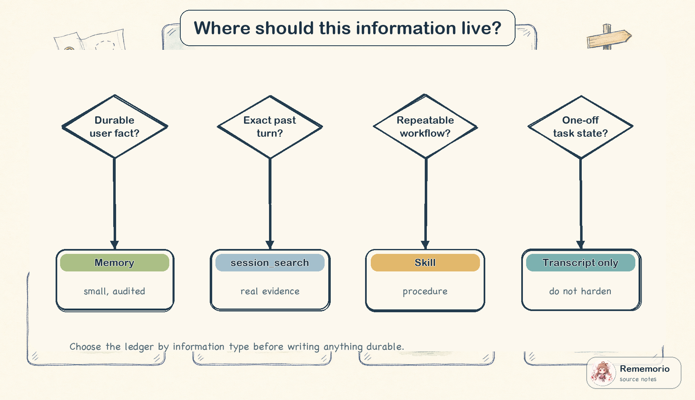

Hermes Agent 在 README 里把自己定义为 Nous Research 构建的 self-improving AI agent：
它有终端界面、消息网关、闭环学习、定时任务、delegation、多个运行环境和研究用 trajectory
能力。这个功能地图可以从
README 的特性表
看到；工程表面积则可以从
Python 包元数据
和
前端 workspace 配置
看到：核心包名是 hermes-agent，Python 版本窗口是 >=3.11,<3.14，
前端侧还有 desktop、web、TUI 等工作区。
证据边界。
本文只使用公开 README、配置文件和当前可见源码快照。直接事实来自固定源码链接；设计意图只在调用链、
数据形状和源码注释能够支撑的范围内推断。README 是功能地图，具体机制以源码为准；例如
session_search 工具本身在当前源码中明确走 SQLite/FTS5 并返回真实消息，不在工具内做 LLM 调用。
读 Hermes 这类系统，最容易被“memory”“skills”“curator”“gateway”“cron”这些功能名带散。 更稳的切入点是问：所有入口最终是不是回到同一个回合循环？哪些内容进入稳定 system prompt？ 哪些内容进入 transcript？哪些内容会在回合结束后变成持久状态？后台维护又怎样避免和前台任务抢注意力？
一、先抓住主语：AIAgent 是运行时核心
Hermes 的核心不是某个单独的“记忆模块”，而是 AIAgent 这条运行时主线。
后台 review、
gateway、cron 和 delegation 都会构造或复用 AIAgent，只是它们注入的上下文、
工具边界、平台回调和生命周期不同。
前台一轮对话的入口是
run_conversation。
它先调用 build_turn_context 做一次性准备，然后进入模型调用和工具调用循环，最后交给 finalizer
统一收尾。把它压成伪代码，大致是这样：
ctx = build_turn_context(user_message, history, task_id)
while budget_remains:
api_messages = model_view(messages, cached_system_prompt, turn_only_context)
assistant = call_model(api_messages, tools)
if assistant_has_tool_calls:
append_tool_results(execute_tools(assistant.tool_calls))
continue
final_response = assistant.text
break
return finalize_turn(messages, final_response, counters, review_flags)这段伪代码隐藏了很多异常分支，但保留了最关键的不变量：Hermes 每轮先生成一个“模型视图”， 工具结果回填到同一轮消息列表，最后由 finalizer 负责持久化、插件 hook、外部 memory 同步和 review 触发。 这解释了为什么 Hermes 的“自进化”不是一个和对话平行的黑盒，而是挂在回合生命周期上的后置副作用。

1.1 TurnContext：把“每轮一次”的事情前置
build_turn_context 的源码注释很直接：它负责 stdio 保护、runtime 绑定、重试计数、
用户消息清理、todo 和 nudge 计数恢复、system prompt 恢复或构造、早期持久化、预压缩、插件
pre_llm_call 和外部 memory 预取。定义和返回值在
turn_context.py
里，真正把用户消息追加进本轮消息列表、恢复缓存 prompt、先落盘的逻辑在
同文件后半段。
这里最重要的一点是“早期持久化”：用户消息刚进入本轮，就会尝试写入 session。后面即使模型调用失败、
工具循环中断或进程被杀，transcript 也不至于完全丢失。run_agent 里的
_persist_session
则负责把消息写入日志和 SQLite。
1.2 模型视图不是 transcript 原文
进入 provider 前，Hermes 会复制一份 API-bound messages。源码在
conversation_loop.py
中做了一个关键动作：外部 memory 预取结果和插件上下文只追加到当前用户消息的 API 副本上，
不修改原始 messages。同一段代码还强调，system prompt 是会话级缓存的，
外部 recall 不进 system prompt，以保持 prefix cache 稳定。
这就是 Hermes 的第一条结构纪律：transcript 用于恢复和审计，API-bound view 用于当前推理。 能只影响当前 turn 的东西，就不要污染缓存前缀；能从外部 provider 临时召回的东西，就不要悄悄变成长期规则。
二、System prompt：稳定前缀优先
Hermes 把 system prompt 拆成三层：
stable、context、volatile。这不是事后解读，
build_system_prompt_parts
的 docstring 就这么描述：stable 放身份、工具指导、skills prompt、环境和平台提示；context 放调用者 system message
与项目上下文文件；volatile 放 memory snapshot、用户画像、外部 memory provider block、时间和会话信息。
stable 层的内容可以从
身份和工具指导构造
开始看：只有当 memory、session_search、skill_manage
这些工具真的存在时，对应指导才会进入 prompt。skills 索引也在 stable 层构造，入口在
system_prompt.py。
context 和 volatile 层在
同一个构造函数后半段：
context 会接入 context files，volatile 会读取内置 memory snapshot、用户画像、外部 memory provider block，
再加日期、session id、model 和 provider。最后完整 prompt 被缓存到 agent._cached_system_prompt。
invalidate 的时候会重载 memory，这可以从
invalidate_system_prompt
看到。
| 层级 | 放什么 | 为什么这样放 |
|---|---|---|
| stable | 身份、工具指导、skills 索引、平台提示、环境提示 | 尽量稳定，适合做 prefix cache 的主体。 |
| context | 调用方 system message、项目上下文文件 | 会话内稳定，但跨工作区或入口可能变化。 |
| volatile | memory snapshot、用户画像、provider block、日期和会话信息 | 会话开始时冻结，避免每轮重新渲染打破缓存前缀。 |
| turn-only | 外部 memory 预取、插件 pre_llm_call 上下文 | 追加到当前 user message 的 API 副本，不污染 transcript 和 system prompt。 |
这个分层解释了 Hermes 的很多选择：Memory 工具的中途写入不会立刻改 system prompt；外部 provider 的召回结果不会进入 stable prompt；技能库索引会缓存，但具体技能正文要按需加载。Hermes 的自进化不是把所有新东西都塞进系统提示， 而是先判断它应该住在哪个状态层。
三、三种长期状态：Memory、SessionDB、Skills
很多 agent 项目会把“记住”说成一个功能。Hermes 源码里更值得看的地方，是它把长期状态拆成三本账： facts/preferences、actual transcripts、procedural memory。它们的写入路径、读出路径和 prompt 位置都不同。

3.1 Memory：小、冻结、可审计
tools/memory_tool.py 的模块说明把边界写得很清楚：它是文件型 curated memory，
使用 MEMORY.md 和 USER.md 两个 store；两者在会话开始时作为冻结快照进入 system prompt；
中途写入会立即落盘，但不会更新当前 system prompt，从而保持 prefix cache 稳定。相关说明见
memory_tool.py 开头。
写入路径也很保守。add 会做空内容检查、注入/泄露模式扫描、文件锁、磁盘重载、重复检查和字符预算检查，
再写回磁盘；源码在
MemoryStore.add。
replace 使用短文本匹配，但会拒绝多重匹配，避免误改；对应逻辑在
MemoryStore.replace。
外部 memory provider 又是另一层。初始化时，agent 会根据 config 选择一个 provider，注册到
MemoryManager，再把 provider 暴露的工具 schema 注入工具面，这段在
agent_init.py。
MemoryManager 明确只允许一个外部 provider，并把 provider 的 system prompt block、
prefetch、sync 和 tool schema 统一编排；见
MemoryManager 注册和预取逻辑。
回合结束后的同步走单 worker 后台线程，避免慢 provider 卡住用户响应；见
sync_all。
3.2 Session search：真实 transcript 的索引，不是长期规则
session_search 是跨会话 recall，但它不是把历史总结成 memory。工具说明写明三种调用形态：
传 query 做 discovery，传 session_id 和 anchor 做 scroll，不传参数则 browse；
它走 SQLite session DB 和 FTS5 索引，并返回真实消息。源码说明在
session_search_tool.py。
discovery 的实现会先调用 db.search_messages，再按 session lineage 去重，并用
get_anchored_view 返回命中附近窗口和开头/结尾 bookends；见
_discover。
session_search 的公开函数根据参数决定 discover、scroll、read、browse，并支持跨 profile read-only DB；
见
session_search。
底层 SessionDB 创建 FTS5 表和 trigram 表，messages 的 content、tool name、tool calls 都会进入索引；
schema 和 trigger 在
hermes_state.py。
每条消息的追加逻辑在
append_message，
搜索逻辑则在
search_messages，
包括 BM25、newest/oldest 排序和 CJK trigram/LIKE fallback。
3.3 Skills：程序性记忆，按需加载，使用中修补
Skills 不是 memory 的另一种格式，而是 procedural memory。system prompt 里放的是技能索引和强制加载规则：
构造函数 build_skills_system_prompt 会扫描本地和外部 skill 目录，使用进程内 LRU 与磁盘 snapshot，
本地技能优先于外部目录；这段在
prompt_builder.py。
它渲染出来的提示要求模型先扫描技能索引，匹配时用 skill_view 加载，发现问题用
skill_manage 修补；对应文本在
同函数末尾。
修改技能的入口是
skill_manage。
它支持 create、edit、patch、delete、write_file、remove_file，成功后清空 skills prompt cache。
工具 schema 明确把 skills 定义为 procedural memory，并给出创建和更新信号：复杂任务成功、克服错误、用户纠正后的方法、
非平凡 workflow、用户要求记住流程，或者已加载 skill 过时/缺步骤；见
SKILL_MANAGE_SCHEMA。
| 信息类型 | 应该去哪里 | 源码上的原因 |
|---|---|---|
| 用户偏好、环境事实、小型长期事实 | Memory | 有字符预算、威胁扫描、冻结 prompt snapshot 和替换/删除语义。 |
| 过去说过什么、某次工具输出、会话证据 | SessionDB / session_search | 真实消息进入 SQLite，FTS5 搜索返回 message window，不把证据硬化成规则。 |
| 以后同类任务应该怎么做 | Skills | 技能索引在 prompt 中，正文按需加载，使用中可 patch。 |
| 一次性任务进度、临时失败、当前探索叙事 | Transcript only | 转成 memory 或 narrow skill 会制造错误的长期约束。 |
四、工具执行：runtime-owned 工具和普通工具分界
Hermes 的工具执行器有两个层面：多个工具调用可以并发执行，并保持原始 tool-call 顺序追加结果； 单个或交互类工具走 sequential 路径。并发路径在 execute_tool_calls_concurrent， 顺序路径在 execute_tool_calls_sequential。
顺序路径展示了 Hermes 的工具边界：先做 tool_search unwrap 和 scope gate，再走插件 block、guardrail、activity tracking、 progress callback、checkpoint preflight。文件写入工具和 destructive terminal command 前会做 checkpoint；这说明工具执行不只是函数分派， 还承载了安全、观测和恢复语义。
runtime-owned 工具的分派也在这个文件里。session_search 会拿到 session DB，
memory 会调用内置 memory tool 并通知外部 provider，
delegate_task 会转发给 agent 自己的 delegation dispatcher；这些分派逻辑可以从
tool_executor.py
看到。其他普通工具才交给更一般的 tool registry。
五、后台自改进：先交付，再学习
Hermes 的自改进不是在回答用户前停下来“反省”。finalizer 在组装 result、执行 post hook、同步外部 memory 后，
才判断是否触发 memory/skill review。源码在
结果组装
和
review 触发
两段里：只有有 final response、未被 interrupt、且 memory 或 skill nudge 触发时，才调用
_spawn_background_review。

5.1 Background review：同 runtime，窄工具面
agent/background_review.py 的模块说明给出了设计目标：fork 一个 agent 回看本轮对话，判断是否保存或更新 memory/skill；
写入直接落到 memory 和 skill store，主会话和 prompt cache 不被触碰。源码说明在
文件开头。
真正构造 review agent 的逻辑在
_run_review_in_thread：
它继承父 agent 的 provider、model、base_url、api_key、credential pool 和 toolset 配置，但 skip_memory=True，
避免外部 memory provider 被 review harness 污染。它还把内置 memory store 重新绑定回父 agent，所以 review 写入仍能落盘。
另一个关键点是 prompt cache：review fork 会继承父 agent 的 _cached_system_prompt，
并固定 session_start 和 session_id。随后它设置 tool whitelist，只允许 memory 和 skills 相关工具；
whitelist 和 run_conversation 调用在
background_review.py。
哪种 prompt 被用于 memory、skill 或 combined review，则由
spawn_background_review_thread
选择。
5.2 Curator：空闲触发的技能库维护器
Curator 不是每轮 review，而是空闲触发的技能库维护器。文件说明写明它会周期性 review agent-created skills， 做 lifecycle 状态迁移，必要时 fork 一个 AIAgent 去 pin、archive、consolidate 或 patch 技能；严格不变量是只碰 agent-created skills、不自动硬删、pinned skills 跳过自动迁移，并使用 auxiliary client；见 curator.py 开头。
should_run_now 会检查 enabled、paused 和 interval gate；首次观察只播种 last_run_at，不立即运行，
见
should_run_now。
自动状态迁移会根据最后活动时间把技能标记 stale、archived 或 reactivated，pinned 不动，见
apply_automatic_transitions。
真正跑一轮 curator 的入口是
run_curator_review：
先做自动迁移，再在有 candidate 时启动 LLM review，并更新 state。review agent 的创建在
_run_llm_review：
它以 platform="curator" 构造 AIAgent，跳过 context files 和 memory，并禁用递归 nudge。
gateway 的 cron ticker 会周期性调用 maybe_run_curator，这一点可以从
gateway/run.py
看到。
六、多入口运行面：Gateway、Cron、Delegation
Hermes 的工程判断不只在前台 CLI。它的一个重要特征是多入口运行面都尽量复用同一个 AIAgent 核心， 同时在入口边界上附加不同的策略。

6.1 Gateway：平台上下文和用户交互桥
gateway 的 session context 记录 source、connected platforms、home channels 和 session metadata； 数据结构在 SessionContext。 它会渲染成 system prompt 段，说明消息来自哪里、哪些平台可用、哪些 delivery target 存在，同时在安全平台上可做 PII redaction； 渲染逻辑见 build_session_context_prompt。
gateway 前台消息处理会先构造 context prompt，见
run.py。
随后按 session key 复用或新建 AIAgent，构造参数包含 model、runtime、toolsets、platform、user/chat/thread 信息和 session DB；
见
agent 构造段。
background review 的平台消息回调也在这里排队，主响应交付后再释放，见
background_review_callback。
最终调用点是
agent.run_conversation。
6.2 Cron：非交互入口必须更窄
cron scheduler 的模块说明说 gateway 每 60 秒 tick 一次，并用文件锁避免重叠执行；
见
cron/scheduler.py。
cron-spawned agent 永远禁用 cronjob、messaging、clarify 三类 toolset，
再叠加用户配置的 disabled toolsets；见
_resolve_cron_disabled_toolsets。
cron 还有一个很现实的分支：如果 job 是 no_agent，它完全不构造 AIAgent，
只执行脚本并交付 stdout 或错误；这段在
run_job。
如果走 agent，prompt 会在组装后再次扫描注入风险，尤其覆盖 runtime-loaded skill content 和脚本输出；
见
_scan_assembled_cron_prompt。
真正构造 cron AIAgent 的位置在
scheduler.py：
cron 传入平台 cron、job session id、session DB，跳过 memory，禁用交互类工具。
运行时用单线程 future 监控 inactivity timeout，见
agent.run_conversation future。
tick 会找到 due jobs、推进 next_run_at、并发执行、保存输出、投递响应并标记运行结果；见
tick 主流程。
6.3 Delegation：隔离上下文，父亲只拿摘要
delegate_task 的模块说明很清楚：它会生成 child AIAgent，子 agent 有隔离上下文、
受限 toolsets 和自己的 terminal session；父 agent 阻塞直到子任务完成，但父上下文只看到 delegation call
和摘要结果，不看到子 agent 的中间工具调用和 reasoning。见
delegate_tool.py 开头。
子 agent 默认不能使用 delegate_task、clarify、memory、
send_message、execute_code，这在
DELEGATE_BLOCKED_TOOLS
中定义。构造子 agent 时，会继承或覆盖 provider/model/credential，但 skip_context_files=True、
skip_memory=True，并有独立 iteration budget；见
子 agent 角色和工具集计算
以及
AIAgent 构造参数。
delegate_task 支持单任务和 batch。它检查 spawn pause、depth limit、最大并发 child 数，
将 batch 任务转换成子 agent 列表，再用 thread pool 并行执行；入口和前半段控制逻辑在
delegate_task，
batch 并行执行在
后续逻辑。
七、把自进化还原成工程契约
现在可以回答开头的问题：Hermes 的“自进化”长在哪里？不是一个独立模块，而是这几个契约叠在一起：
- 前台回合把消息、工具、结果、reasoning、token 和 cost 统一收束到 result 和 session store。
- system prompt 尽量稳定，长期状态要么冻结进 snapshot，要么以当前 turn context 的方式临时注入。
- Memory、SessionDB、Skills 三本账分工清楚，避免把证据、偏好和流程混成一个不可控的 blob。
- Background review 在响应交付后 fork，同 runtime、窄工具面、best effort，不抢前台任务。
- Curator 只做空闲技能库维护，并且只碰 agent-created skills，不自动硬删。
- Gateway、cron、delegation 都复用 AIAgent，但入口策略不同：平台上下文、非交互安全、子任务隔离。

7.1 常见误读
第一种误读是把 memory 当成所有历史的归宿。源码不是这么做的。Memory 有预算、扫描、冻结 snapshot 和手动语义， session_search 才是查真实历史的工具。
第二种误读是把 skills 当成“每次任务都创建一个经验条目”。技能系统的源码和 review prompt 都强调 class-level、 umbrella、patch existing skill、支持文件，而不是一轮一个窄技能。
第三种误读是把 background review 想成主回答的一部分。finalizer 的触发位置说明它发生在 final response 之后， gateway 也会排队 review summary，主响应交付后再释放。
第四种误读是把 cron 当成普通聊天自动化。cron 代码禁用交互类工具、扫描组装 prompt，并且支持 no-agent 脚本路径。 非交互入口的默认假设必须更保守。
八、结论：自进化靠状态纪律，不靠“反思”这个词
Hermes Agent 的源码价值在于，它把 agent 的长期学习拆成了可检查的 runtime 边界： 稳定 prompt、当前 turn 注入、真实 transcript 索引、curated facts、procedural skills、后台 review、空闲 curator。 这些边界让“学习”不至于变成随意修改系统提示，也不至于把一次性任务错误硬化成长期规则。
如果只记一句话，可以是：
事实要小而可审计；
证据留在 transcript；
流程变成 skill；
当前 turn 的 recall 不污染稳定 prompt；
后台学习发生在响应交付之后。这也是 Hermes 比较值得借鉴的地方：它不是把所有能力堆进 agent loop，而是给每种状态安排了不同的生命周期。 一个可长期运行的 agent，真正难的是这些生命周期之间的边界。
参考源码
- NousResearch/hermes-agent 固定源码快照
- README 功能地图
- pyproject 包元数据
- run_conversation 入口
- TurnContext 定义
- system prompt 三层结构
- runtime-owned 工具分派
- finalizer review 触发
- Memory 工具说明
- Session search 工具说明
- SessionDB FTS5 schema
- skills prompt 构造
- skill_manage
- background review fork
- curator 不变量
- gateway SessionContext
- cron toolset 边界
- delegation 架构说明